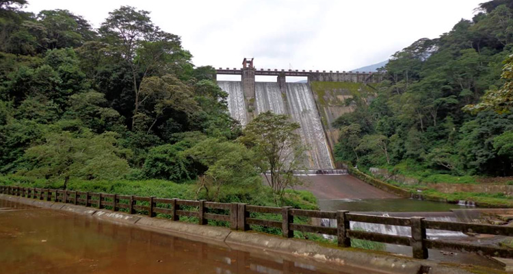
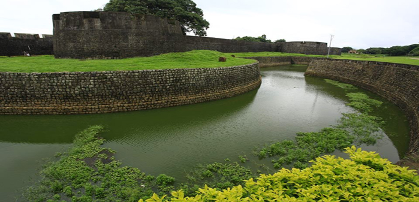
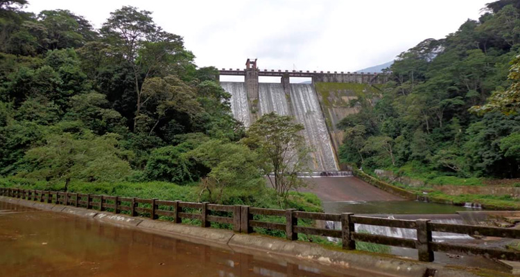
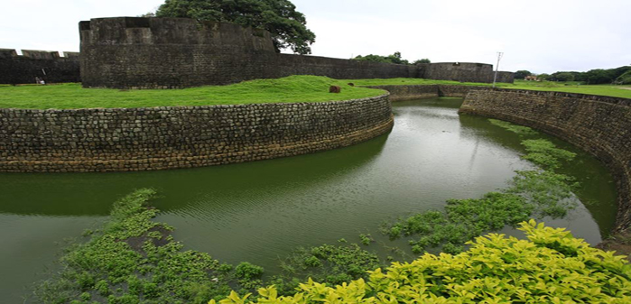
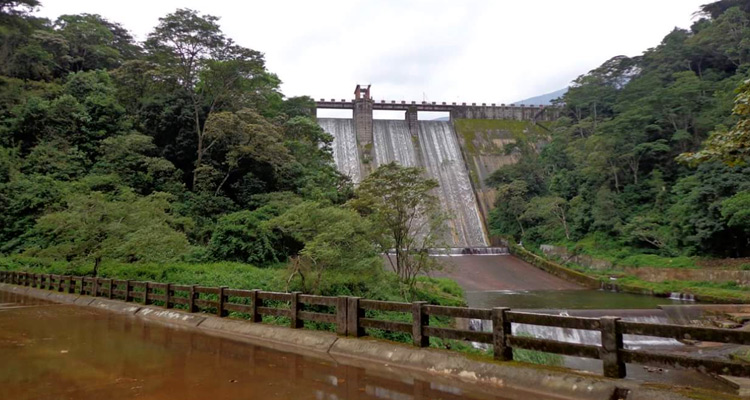
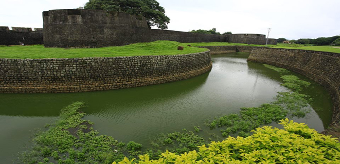
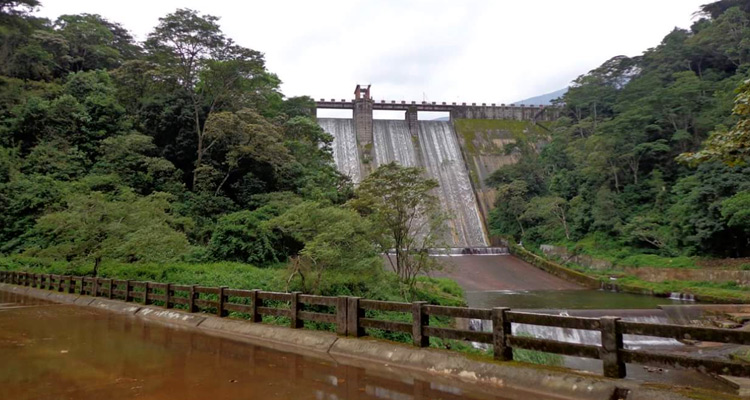
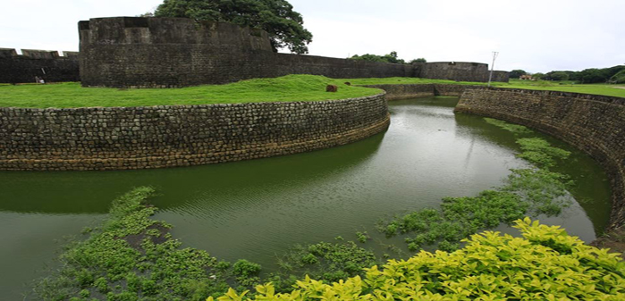

PalakkadPalakkad is a major town of Kerala which is located at the base of the Western Ghats near the famous Palghat gap. It is also acts as a gateway to Kerala. The town abounds in rivers most of which are small and medium tributaries of River Bharathapuzha. It is believed that the name of the town is derived from the combination of the words Pala and Kadu which in Malayalam means a local tree and forest respectively. Palakkad is a well known tourist destination of Kerala and offers numerous natural and manmade places of interest to explore. There are several beautiful dams built across its various rivers and the Malampuzha Dam, which is the largest dam and reservoir of Kerala, is located at a distance of just 8 kms from the town. Other interesting places include the Palakkad Fort, which was constructed by Hyder Ali in 1766, as well as wildlife sanctuaries like Silent Valley Park, Attapady hills and Parambikulam. Moreover, people also like to spend time in various gardens and picnic spots built in the vicinity of the dams which are ideal for enjoying a picnic with family and friends. There is also a Fantasy park where adults and children can enjoy various rides and computer games. Palakkad is well connected to major towns by various means of transportation. The nearest international airport of Coimbatore is located only at a distance of 62 kms from the town. In addition, the town has well connected railway network and a well maintained network of local buses which play to almost all major cities in the vicinity.
Famously known as the Tipu Fort, Palakkad Fort, is situated right in the centre of Palakkad and is considered one of most well-preserved tourist sites in Kerala. Tucked away in the foothills of the majestic Sahayadri mountain range, the fort is a classical beauty situated among dense green forests and serpentine, cascading rivers cutting among the woods. Having served as a military base in the past, the fort is now under the protection of Archaeological Survey of India. It was built by Hyder Ali of Mysore in 1766 and later taken over and modified by the British in 1790. It is named after Hyder Ali’s son, the infamous Tipu Sultan. The fort holds a special place in the hearts of history aficionados and cultural buffs because of its importance in the history of the subcontinent and the struggle for India’s independence. Spread over a massive 60,702 square meters, the grounds are an awe-inspiring sight to behold. The fort is also famous among architecture students because of its unique amalgamation of French craftsmanship and traditional Indian style. The grounds of the fort served as a stable of horses and elephants of Tipu Sultan’s army in the bygone days and is now known as Kota Maidanam. Nowadays, it hosts public events like cricket matches, exhibitions, and gatherings. The huge grounds are an attractive spot for a picnic and taking strolls in the area. The grounds also host a museum of Archaeology which is a tourist hotbed and attracts hundreds of visitors every year. The museum showcases beautiful photographs of the fort in the before and after fashion. It is quite fascinating to watch the transformation of the place from a forgotten, dilapidated building to its present state bustling with visitors and showcasing gorgeous French architecture. The work done by ASI over the Palakkad fort is impressive in its own right and makes one stare around the place in wonder. A must visit place for anyone who is interested in architecture, history, and restoration of old buildings. The fort is surrounded by a beautiful moat that adds to the mystical quality of the place. Earlier, a drawbridge connected the fort to main grounds, but it has now been replaced by a permanent bridge. The jogging tracks running along the moat are extremely popular among tourists and locals for evening and morning runs. The square-shaped fort with its laterite walls is a sight to behold in itself and because of its beautifully landscaped structure, it is an ideal place for you enjoy a picnic with your friends and family
Thrissur Beach is one of its kinds in the entire Kerala region which bears every charm to attract people from all walks of life. Situated on the coastline of Arabian sea, the beach offers alluring views during sunrise and sunsets.Earlier, the beach used to attract only the locals but as the time passed the beauty of the beach won hearts of the tourists even in the distant lands.The Thrissur beach is situated in the city of Thrissur which is also the cultural capital of Kerala. Besides the beach, the place is famous for the ancient temple, churches, and mosques.With people flocking around on the sunkissed golden sand bordered by swaying palm trees and the sound of the waves, the place gets charismatic as the dawn happens.People coming from all around the world to witness the natural beauty of the place indulge themselves into various activities that happen on and around the beach like swimming, surfing, fishing, sunbathing, boat rides and birdwatching on the dreamy stretch of vast blue water.Water resorts situated around provides a panoramic view of the sea along with an opulent stay option. For those who are looking for spending some quality time with the family, there are ample opportunities for all age groups such as playgrounds, garden, and waterfront parks.A lot of locals treat this place as a picnic spot on weekends.Ayurvedic massage centers offer relaxing massages with locally grown medicinal herbs. As the locals grow herbs in the area, the refreshing smell fills the surroundings and rejuvenate the people visiting the place. One can indulge themselves in various sorts of water sports such as kayaking, Catamaran sailing, scuba diving. One of the most profound experience is the fishing that one can indulge in with the help of local fishermen. To satisfy the eating urges, the place also provides options for trying out some of the authentic recipes of the south.The costermonger provides lip-smacking food options to try and attracts a lot of tourists as well as the local crowd. Plenty of resorts provide a perfect dining experience to the guests and makes the tourists feel relaxed and relish the Malayali cuisine.So to adore the natural beauty of the sea, the land, and sizzling coastline, one must visit the enchanting Thrissur beach.

Spread over an area of nearly 400 square meters, the wildlife sanctuary is one of the most famous Palakkad tourist places for its Wild Tiger Reserve. Wildlife enthusiasts and thrill seekers will find it perfect to spend a day among the plethora of flora and fauna of the sanctuary along with the large population of royal Bengal tigers housed here. Set against the backdrop of Anaimalai Hills and Nelliampathy Hills, the sanctuary is a heaven for nature lovers.

Nestled 13 kms from Mannarkkad is the little hamlet of Kanjipurzha famous among tourists for the majestic dam of the same name. With a catchment area of over 7000 hectares, the dam is an idyllic getaway from the hustle and bustle of everyday city life. The dense forests of Vettolachola and the rolling green hills of Vakkodan also make Kanjirapuzha a perfect place to calm your frayed nerves and salve your weary soul. The vantage point of the dam offers breathtaking views of the valley. The gardens adjacent to the dam also offer a stunning collection of vibrant flowers.

If you are an adrenaline junkie looking for a thrill-inducing trek into the heart of God’s own country, the trail to Dhoni waterfalls is the place for you. Enjoy the three-hour trek through the lush green forests to reach the falls. The trail up the hills fills one with a sense of wonder and calmness – the greenery, the leaves rustling, the wind humming. And once you reach the falls, the mesmerizing view of turquoise waters will make it impossible to tear your eyes away from it. You can spend a perfect day of picnic near the falls.